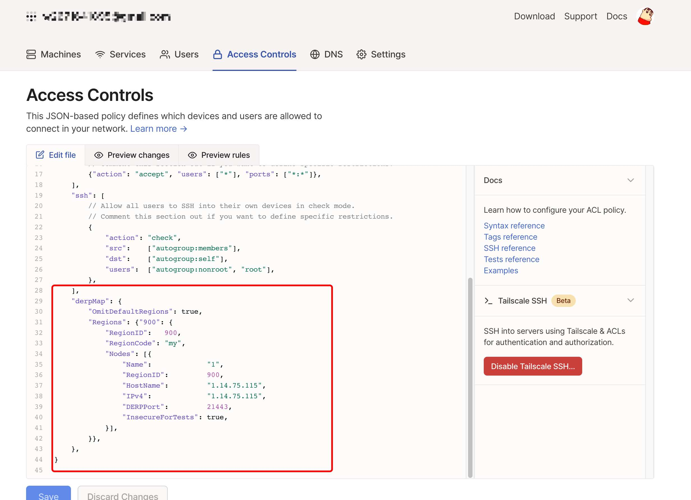
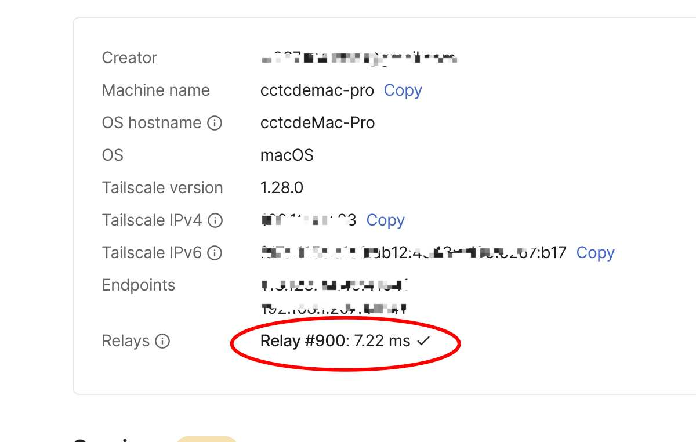

tailscale快速搭建derper中转服务器
- 作者:
- 淡白
- 创建时间：
- 2022-08-01 12:58:25
- derper tailscale
摘要：本文介绍了使用docker-compose快速部署DERP服务器的方法。首先，在docker-compose文件中定义了DERP服务的相关配置，如重启策略、网络模式、容器名称和环境变量等。然后，使用`docker-compose up -d`命令启动DERP服务器。 接下来，文章介绍了如何修改DERP服务器的管理配置。通过修改配置文件中的`derpMap`部分，可以添加或修改DERP服务器的区域、节点信息等。 最后，保存并重启客户端，即可使用修改后的DERP服务器。 该教程的详细步骤可参考原文链接。
使用docke-compose快速部署
version: '3.3'
services:
yangchuansheng:
restart: always
network_mode: host
container_name: derper
environment:
- DERP_HTTP_PORT=2180
- 'DERP_ADDR=:21443'
image: ghcr.io/yangchuansheng/ip_derper
docker-compose up -d
开放端口3478 还有配置中的端口
端口根据自身情况进行修改
修改管理配置
”`
"derpMap": {
"Regions": {"900": {
"RegionID": 900,
"RegionCode": "my",
"Nodes": [{
"Name": "1",
"RegionID": 900,
"HostName": "1.14.75.115",
"IPv4": "1.14.75.115",
"DERPPort": 21443,
"InsecureForTests": true,
}],
}},
},
保存重启客户端 